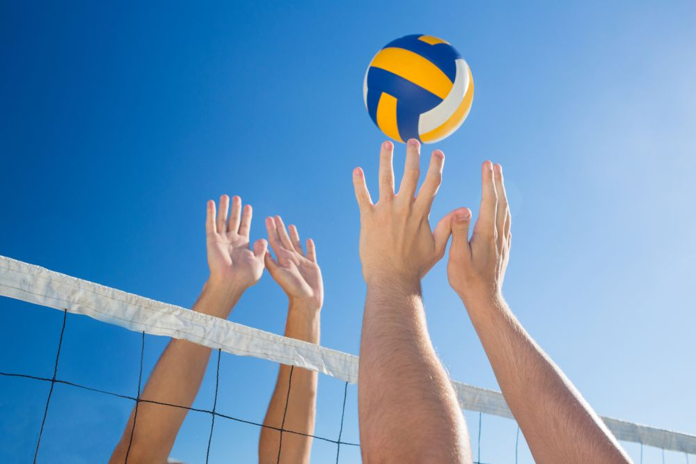

Sport News
SportNews é um site de notícias esportivas dedicado a fornecer informações atualizadas e abrangentes sobre diversos eventos e competições esportivas em todo o mundo. Com uma equipe de jornalistas especializados e entusiastas do esporte, o site cobre uma ampla gama de esportes, desde futebol, basquete até Volei, futuramente abrangindo mais esportes.
Noticia Especial
CBF encaminha acordo com Fernando Diniz para técnico interino enquanto Ancelotti não chega
A CBF chegou a um acordo com Fernando Diniz para ser o técnico interino da seleção brasileira enquanto aguarda Carlos Ancelotti deixar o Real Madrid. A informação é do ge. A entidade também deixou alinhado com o Fluminense que ele assumiria apenas em Datas-Fifa para comandar o Brasil nas Eliminatórias da Copa do Mundo e amistosos. E não deixaria o clube. Segundo O GLOBO apurou, o nome não era o único alvo entre treinadores brasileiros que poderiam ocupar o cargo de interino, mas foi a opção que mais agradou aos jogadores neste momento. Entretanto, ainda faltavam alguns detalhes para sacramentar tudo e haver o anúncio esta semana. A CBF ainda não confirma, assim como empresários ligados a Fernando Diniz.
O técnico é agenciado por Giuliano Bertolucci, que foi procurado, mas não retornou contatos. A CBF entende que não seria interessante tirar treinador de clube brasileiro para ocupar a função. O único nome que teria alguma chance seria de Rogério Ceni, mas foi rechaçado. Dorival Júnior também esteve cotado, mas por estar no São Paulo a possibilidade não foi adiante. O presidente da CBF, Ednaldo Rodriguez, não queria fazer convites para não deixar muitas pistas. Carlo Ancelotti é esperado para assumir a seleção no meio de 2024, quando termina seu contrato com o Real Madrid. Se ele vier antes, o técnico interino poderia encerrar o trabalho em janeiro.
Confira a noticia completa aqui.